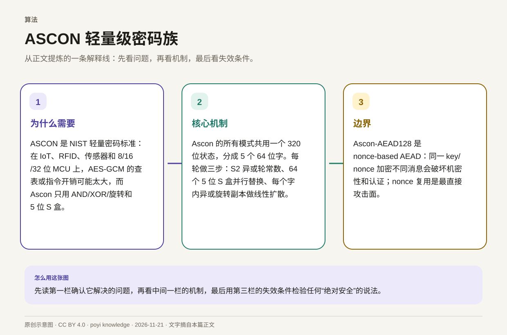
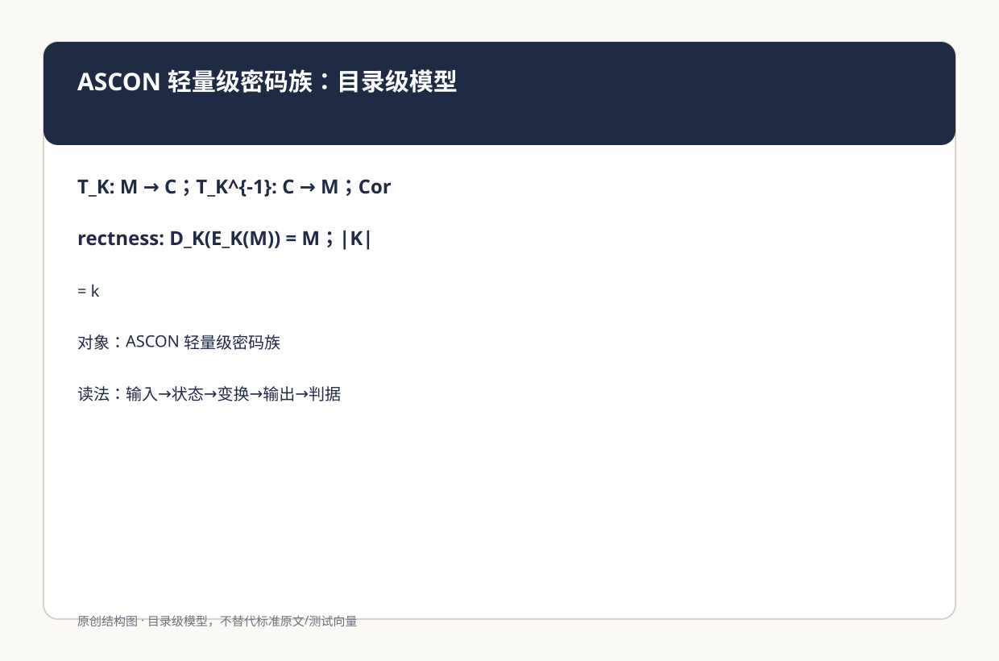

原理与机制
算法：ASCON 轻量级密码族（ASCON）。### 320 位状态与 SPN 置换
Ascon 的所有模式共用一个 320 位状态，分成 5 个 64 位字。每轮做三步：S2 异或轮常数、64 个 5 位 S 盒并行替换、每个字内异或旋转副本做线性扩散。AEAD 初始化/收尾用 12 轮 p[12]，处理数据块用 8 轮 p[8]。### 双工 AEAD
Ascon-AEAD128 的 key、nonce、tag 都是 128 位，rate 128 位、capacity 192 位。初始化注入 K||N，AD 和明文按 128 位块注入并提取密文，每块后跑 p[8]；收尾再注入 K，输出 128 位标签。### 哈希与 XOF
Ascon-Hash256 用 64 位块吸收、256 位输出；Ascon-XOF128 可任意长度输出；它们与 AEAD 共享同一个置换。

为什么重要
ASCON 是 NIST 轻量密码标准：在 IoT、RFID、传感器和 8/16/32 位 MCU 上，AES-GCM 的查表或指令开销可能太大，而 Ascon 只用 AND/XOR/旋转和 5 位 S 盒，硬件面积小、软件可位切片。一个置换同时覆盖 AEAD、哈希和 XOF，减少芯片和固件里的密码原语数量。
应用与实例
用于 Ascon-AEAD128、Ascon-Hash256、Ascon-XOF128、Ascon-CXOF128；NIST SP 800-232 于 2025-08 正式发布。适合短消息、低功耗、硬件面积受限的设备。工程要点：nonce 必须唯一；标签可截断但至少 96/128 位；初始化/收尾用 p[12]，数据用 p[8]，不能混；侧信道防护要用 masked 实现；不要把它当 AES-GCM 的高吞吐替代。

边界与攻击面
Ascon-AEAD128 是 nonce-based AEAD：同一 key/nonce 加密不同消息会破坏机密性和认证；nonce 复用是最直接攻击面。
历史与背景
ASCON 由 Dobraunig、Eichlseder、Mendel、Schläffer 设计，2014 年提交 CAESAR，2019 年入选 CAESAR 轻量 AEAD 组合；2023 年 2 月 NIST 宣布选择 Ascon 家族作为轻量密码标准；2024-11 发布 SP 800-232 初始草案，2025-08 正式发布。它的设计目标是低面积、位切片友好和在线认证，标准化主要使用 12/8 轮置换。
技术参数与复算边界
该条目的形式模型是 (S_{i+1}=f(S_i\oplus (M_i,|,0^{*})),\quad h=\mathrm{Squeeze}(S))。输入：输入：ASCON 轻量级密码族的公开参数、密钥/随机数与消息；变量说明：S 海绵状态，f 置换，M_i 消息块。 预期输出：按 ASCON 轻量级密码族 的规范执行后得到可验证的输出或可比较的优势界。 复算必须给出输入、步骤、输出和单位；示例只演示流程，不替代标准测试向量。
复杂度由密钥长度、分组/状态规模、轮数、随机数质量和敌手模型共同决定；参数越界、版本差异与实现侧信道都可能使公式结论失效。已登记限制：该条目只给出形式模型与可复算步骤，不声称已完成生产实现、侧信道认证或第三方安全评估。
参数与状态规模
公式 (S_{i+1}=f(S_i\oplus (M_i,|,0^{*})),\quad h=\mathrm{Squeeze}(S)) 的输入、输出和单位必须逐项登记；复算顺序为：1. 吸收阶段把消息块异或进状态并置换 2. 进入挤压阶段输出摘要 3. 按需要重复挤压。
状态规模、密钥长度、分组长度和轮数决定复杂度；这些量不能从标题推断，必须以标准或实现文档为准。
测试向量与实现边界
标准测试向量只证明某组输入在某个实现中产生了预期输出，不证明所有参数都安全。记录测试向量时至少要写：算法/模式、密钥、明文或消息、随机数/IV、输出长度、实现版本。该条目已登记的限制是：该条目只给出形式模型与可复算步骤，不声称已完成生产实现、侧信道认证或第三方安全评估。
如果实现使用查表、分支或可变时间操作，算法层的证明不能替代侧信道评估；如果协议层没有认证，算法层的机密性也不能阻止替换或重放。
逐步示例与核验
形式模型与复算步骤
[S_{i+1}=f(S_i\oplus (M_i,|,0^{*})),\quad h=\mathrm{Squeeze}(S)]
ASCON 轻量级密码族的公开参数、密钥/随机数与消息；变量说明：S 海绵状态，f 置换，M_i 消息块。1.吸收阶段把消息块异或进状态并置换。2.进入挤压阶段输出摘要。3.按需要重复挤压。边界：公式只覆盖已登记的参数与假设；参数取值、标准版本和实现细节仍以来源为准。
参考出处
- Wikipedia search entry for ASCON 轻量级密码族. https://zh.wikipedia.org/w/index.php?search=ASCON%20%E8%BD%BB%E9%87%8F%E7%BA%A7%E5%AF%86%E7%A0%81%E6%97%8F
- Handbook of Applied Cryptography (Menezes, van Oorschot, Vanstone). https://www.cacr.math.uwaterloo.ca/hac/